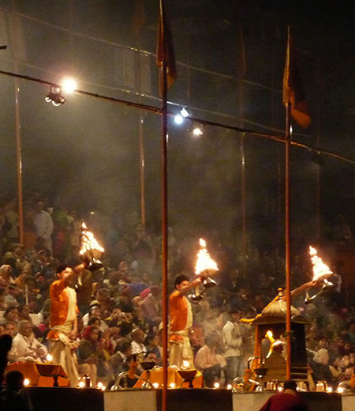

SIGNATURE TOUR TF-1

Duration: 12 N / 13 D : Optional addition: Nepal 5 day supplement (to be asked for separately)
Destinations : Delhi - Neemrana - Samode - Agra - (Orchha) Khajuraho - Panna - Varanasi - Delhi (or onwards to Nepal)
Journey Overview:
This tour showcases the cultural facet of India, and can be combined with a Nepal tour supplement for a fuller experience. We start at New Delhi, the capital of India, which is a great acclimatizer to the sights and smells of the Indian subcontinent. From there on the journey winds into Rajasthan, the land of brave warriors, enchanting folklore, and sheer colour; Post that its on to Agra - the jewel in India’s crown and the most romantic monument of all time - the Taj Mahal. We carry on via Orchha to Khajuraho, to look and gawk at the explicit and exotic temple architechture. The panorama then cuts to a dramatic night in the wildlife resort at Panna, where you could run into a majestic Bengal Cat sauntering uninterestedly across your safari trail! Cap your tour experience with that teeming cauldron of Hindu culture - take a boat ride on the river Ganges in sacred Varanasi and cleanse your soul by taking part in the splendid Ganga aarti - an ode to the sacred river Ganges, before heading out to Nepal, or back to Delhi.
Itinerary Highlights:
Day 01: Arrive Delhi, private transfer to the hotel
Day 02: Private transfer by air conditioned car to Neemrana. Explore the labyrinth at the Fort Palace, take a sand dune trek, and enjoy the vintage car ride.
Day 03: Drive to Samode, day at leisure.
Day 04: Visit Amber Fort on the outskirts of Jaipur, and indulge in some city sightseeing - this is also your day to take in some serious shopping - ask your guide to take you for a walk deep into the city markets.
Day 05: Samode village Safari - can be done on camel cart or camel back.
Day 06: Drive to Agra enroute visit Fatehpur Sikri, visit the world famous Taj Mahal & Red Fort
Day 07: Train to Jhansi, then disembark and drive to Khajuraho : enroute visit Orchha fort
Day 08: Guided Temple tour of Khajuraho
Day 09: Panna wildlife sanctuary - S take an evening jeep safari into the jungle : 4.00 pm is a good time to see the variety of animals when they leave their abodes to quench their thirst at watering holes.
Day 10: Fly to Varanasi, view the Ganga aarti in the evening, overnight at your hotel in Varanasi.
Day 11: Boat Ride at River Ganges, visit Sarnath, overnight at Varanasi hotel.
Day 12: Fly back to Delhi, overnight at Delhi
Day 13 : Departure
Where to Stay:
Delhi : Oberoi / Taj / Aman / Dusit / Imperial
Neemrana : Neemrana Fort
Samode : Samode Palace / Samode Bagh
Agra : Oberoi Amar Vilas / Trident / Taj
Khajuraho : Lalit Temple View/ Taj
Panna : Taj Safari - Pashangarh wilderness lodge
Varanasi : Taj Nadesar Palace / Gateway Ganges
Optional extension to Nepal:
Overview: Plan a trip to explore the picturesque hills, architectural marvels, holy shrines and modern-day lifestyle of Nepal. Be it Kathmandu's temples and casinos or Pokhara's centuries-old caves and milky white cascades, Nepal's towns offer it all. These places are dotted with numerous structures that enhance the beauty of this pleasing nation.
Nepal Itinerary highlights:
Day 12 : Fly Varanasi to Kathmandu
Day 13 : Sightseeing in Kathmandu - explore the Pashupatinath temple, Durbar Square (a UNESCO World Heritage site), Patan, and lots more. Take a walk through the local markets for some enjoyable bargaining.
Day 14: Drive from Kathmandu to Pokhara. En route, do some river rafting, or the less adventurous could visit the Manokaamna temple, where all wishes made are said to come true.
Day 15: Sightseeing in Pokhara & trip to Devi Falls
Day 16 : Drive from Pokhara to Kathmandu - Rest of the day is at leisure, but after that its Casino night in Kathmandu!
Day 17: Take a flight to New Delhi or straight home.
Inclusions
-Hotel accommodation as per specified or similar. The hotel accommodation is based on two persons sharing one double room with private facilities and daily American buffet breakfast (Some may include further meals)
-Private touring with your own personal guide / Historian, air conditioned vehicle with Chauffeur.
-Around-the-clock support in each destination during your trip
-Elephant / Jeep ride at Amber Fort
-Entrance fees at all monuments and museums mentioned in the itinerary
-All airport and internal transfers as specified in an air-conditioned vehicle
-Child above 2 years and below 11 years without extra bed, breakfast cost to be settled directly by the guest
-Bottled water throughout the tour.
-Internal flights if any.
-All applicable taxes Points to be noted:
-All Indian citizens must carry a valid passport or voting card; children below 18 years can travel with school/college identity card with photograph and birth date
-Carrying of India INR 500 and 1000 notes is a punishable offence in Nepal
-Check-in time at hotels is 1 pm and check-out time is 11 am Exclusions
-Anything not mentioned under 'Package Inclusions'
-All personal expenses, portages, optional tours and extra meals / snacks
-Camera fees, alcoholic/non-alcoholic beverages
-Tips, laundry and phone calls
-Medical and travel insurance
-Any increase of Govt. taxes at time of operating the tour
-Any expense incurred or loss caused by reasons beyond our control such as bad weather, natural calamities, landslides, floods, flight delays, rescheduling, cancellations, any accidents, medical evacuations, riots/strikes/war, & etc.